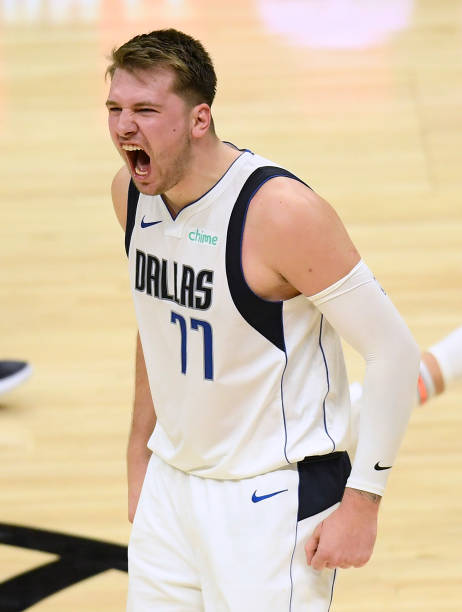

Hier erfahren sie über Jetziiege spieler bei denn Dallas Mavericks und einer der besten Spieler die bei denn Mavericks gespielt haben
| Nummer | Nationalität | Name | Position | Größe |
|---|---|---|---|---|
| 77 | Slowenien | Luka Dončić | Guard/Forward | 201 cm |
| 7 | Canada | Dwight Powell | Forward/Center | 211 cm |
| 8 | Australien | Josh Green | Guard | 198 cm |
| 10 | USA | Dorian Finney-Smith | Forward | 203 cm |
| 11 | USA | Tim Hardaway Jr. | Guard | 198 cm |
| 13 | USA | Jalen Brunson | Guard | 191 cm |
| 21 | Frankreich | Frank Ntilikina | Guard | 193 cm |
| 25 | USA | Reggie Bullock | Guard/Forward | 198 cm |
| 42 | Deutsch | Maxi Kleber | Forward | 208 cm |
| 44 | Letland | Dāvis Bertāns | Power Forward | 208 cm |
| 51 | USA | Christian Wood | Center | 208 cm |
Luka Dončić Luka Dončić ist ein slowenischer Basketballspieler, der in der NBA spielt. Er wurde 2018 als drittes Auswahlrecht in der ersten Runde von den Dallas Mavericks ausgewählt. Bevor er in die NBA kam, spielte Dončić für Real Madrid in der EuroLeague.Dončić ist bekannt für seine Passfähigkeiten, seine Wurfgenauigkeit und sein Spielverständnis. Er hat in seiner ersten NBA-Saison mehrere Auszeichnungen gewonnen, darunter das All-Rookie-First-Team und den NBA Rookie of the Year Award.Dončić hat sich schnell zu einem wichtigen Spieler für die Mavericks entwickelt und hat in der Saison 2022-2023 bereits mehrere Triple-Doubles erzielt. Er gilt als eines der vielversprechendsten Talente in der NBA und hat eine große Zukunft vor sich.
